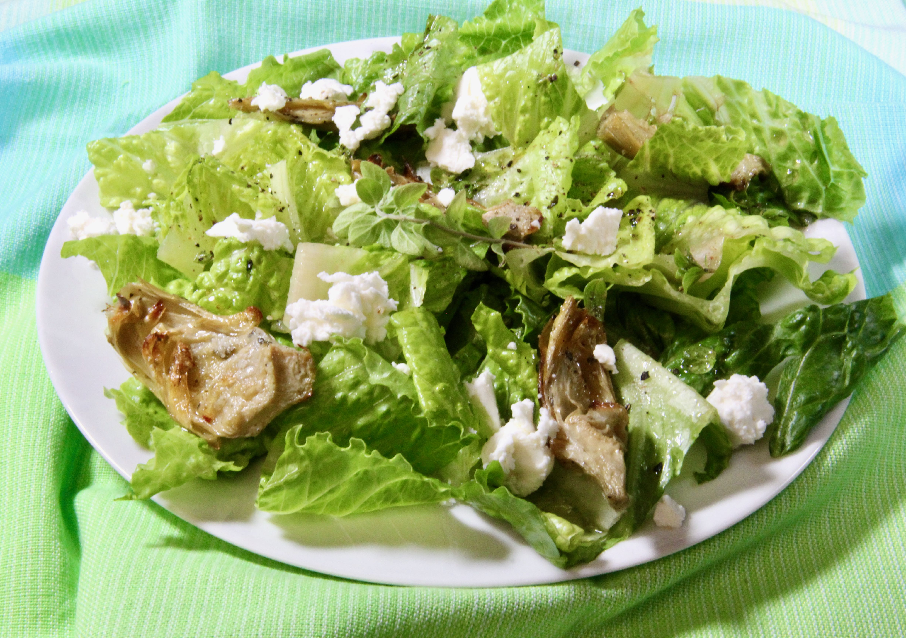

Roasted Artichoke Greek Salad

Nutrition Facts
Per Serving: 169 calories; protein 4g; carbohydrates 4.7g; fat 15.6g; cholesterol 16.7mg; sodium 339.3mg
Ingredients
- 1 cup arthichoke hearts, drained and quartered
- 1 teaspoon olive oil
- sea salt to taste
- 3 tablespoons olive oil
- 2 tablespoons freshly squeezed lemon juice
- 1 tablespoon chopped fresh oregano
- 6 cups torn romaine lettuce
- 1 and half cup crumbled feta cheese
Directions
-
Step 1
Preheat the oven to 375 degrees F (190 degrees C).
-
Step 2
Place artichokes on a baking sheet. Drizzle with 1 teaspoon olive oil and sprinkle with sea salt.
-
Step 3
Bake in the preheated oven on the top rack until golden, about 25 minutes. Remove from the oven and let cool at least 10 minutes.
-
Step 4
While artichokes cool, whisk 3 tablespoons olive oil, lemon juice, oregano, and sea salt to taste together in a large bowl for dressing. Set aside.
-
Step 5
Place romaine lettuce in a serving bowl. Add artichokes and feta cheese. Drizzle with dressing and toss to combine.
Back to main page...